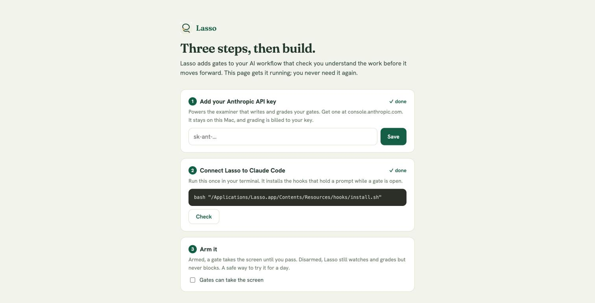

Every screen, in order
These are real screenshots of the app being used, captured from one task running start to finish: a gate opens, a first answer falls short, the study room teaches the gap, the retry passes, and the work releases. Then the other gates and Settings.
0First launch
Download, open, and one page sets everything up: your Anthropic key, the Claude Code hooks, and the arm switch. You never see it again.

1Today
Your tasks with deadlines and stakes. Each one shows where it is in the chain: map, spec, build, review, merged. A missed deadline is shown honestly.

2The gate opens, you answer from memory
You asked Claude to build keyset pagination. Lasso holds the prompt and opens this gate. The examiner sized it deep and wrote questions for this exact task. No notes, no code, paste is off.

3Your answer, checked
The first answer was thin. A check for what landed, an x for each miss, with one pointed pushback each. No answers are handed over.

4The study room teaches the gap
Same page, no timer. A lesson written for this task and this codebase, naming the real files and the real tradeoffs.

5Two doors out
Say "I can explain it now" to retry with fresh questions, or go back to work and keep learning in Claude. Your tools never lock. Moving forward does.

6Pass, and the debrief
The retry passed. Your answer sits next to what an expert answer also covers. Then the held prompt goes through.

7Review gate, before a PR merges
Review the PR in your own tools and post comments there, or flag lines right here. Your review is graded against a hidden expert read of the real diff. Merging waits for the verdict.

8Debug gate, before a fix merges
Reconstruct the root cause from memory: the reproduction, two competing hypotheses, the evidence that kills one, and why the fix addresses the cause.

9Explain-back, after a build batch
Claude finished a chunk of work. Two quick questions prove you know what just got built and where it breaks first.

10Settings: how strict each gate is
Setup at the top: your own Anthropic key powers the examiner, your GitHub token powers review gates, and one switch arms or disarms the screen takeover. Below it, one bar per gate, off through deep. Tightening applies instantly. Loosening takes 48 hours, except the first time you configure a gate on a new repo, which applies right away.